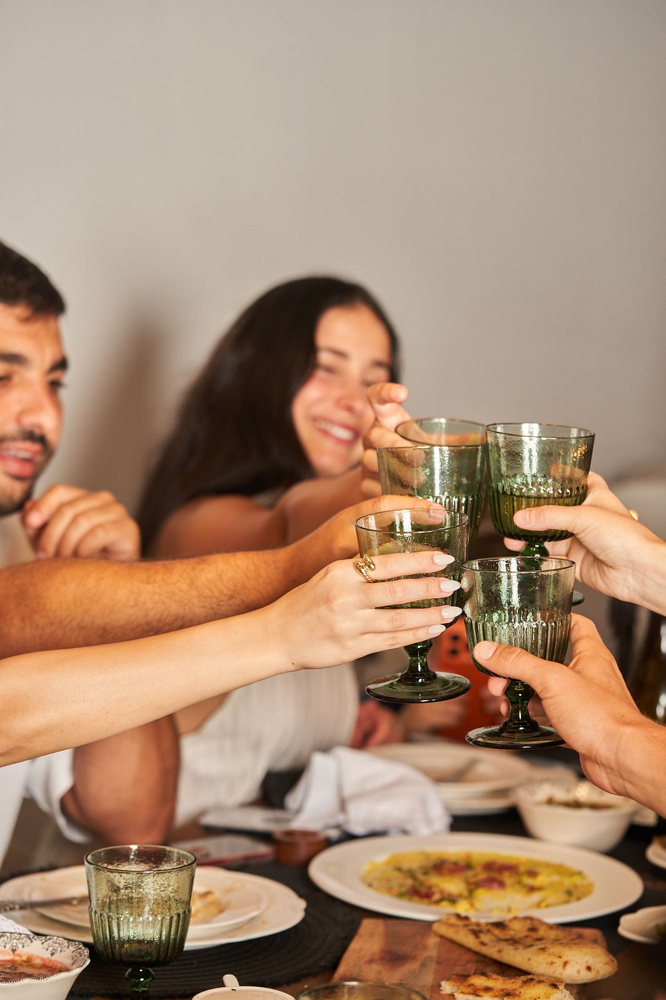

ארוחת שף ליום הולדת בבית: איך מתכננים ערב שזוכרים

יום הולדת בבית עם שף פרטי הוא אחת המתנות הכי אישיות שאפשר לתת, לעצמכם או למישהו שאתם אוהבים. כולם יושבים סביב שולחן אחד, אף אחד לא רץ למטבח, והתפריט עצמו נבנה סביב החוגג. הנה איך מתכננים ערב כזה כך שיעבוד.
ארוחת שף ביום הולדת עובדת הכי טוב כשהיא נבנית סביב החוגג: המנות שהוא אוהב, האנשים שהוא רוצה לידו והקצב שמתאים לו. סוגרים תאריך ומספר אורחים מוקדם, מספרים לשף על החוגג ועל האורחים, מחליטים מראש מתי מגיעה העוגה, ומשאירים את המטבח לשף.
למה ארוחת שף מתאימה ליום הולדת?
במסעדה החגיגה מתחלקת עם שולחנות זרים, ובבית מישהו תמיד נתקע במטבח. ארוחת שף פותרת את שתי הבעיות: האווירה של הבית, עם האוכל והשירות של מסעדה טובה. ומעבר לזה, התפריט הופך לחלק מהמתנה. מנה שהחוגג אוהב במיוחד, או טעם שמזכיר לו טיול או ערב מיוחד, נזכרים הרבה אחרי שהעוגה נגמרת.
מתי להתחיל לתכנן?
ברגע שיש תאריך. סופי שבוע מתמלאים מהר, ולכן כדאי לפנות לשף עוד לפני ששולחים הזמנות לאורחים. אחרי שהתאריך סגור, נשאר לסגור את מספר האורחים, וזה המספר שהתפריט ייבנה סביבו.
איך בונים תפריט סביב החוגג?
בשיחה הראשונה עם השף, ספרו קודם כל על החוגג. מה הוא אוהב לאכול, מה הוא לא אוכל, איזו מנה הוא תמיד מזמין במסעדה. אם יש טעם שקשור לזיכרון משותף, זה הזמן להגיד. מכאן השף בונה הצעת תפריט, ומשנים אותה יחד עד שהיא מרגישה נכון. כדאי גם לספר על האורחים: אלרגיות, צמחונים ומי לא אוכל מה (כך מספרים על זה לשף).
מה עושים עם העוגה?
כדאי להחליט על זה מראש, כי זה משנה את סוף התפריט. יש שתי דרכים נפוצות:
- קינוח מהשף - הקינוח הוא חלק מהתפריט, ואפשר להדליק עליו נר כשהוא יוצא לשולחן.
- עוגה משלכם - מביאים עוגה, ומתאמים עם השף מתי היא נכנסת לשולחן ואיפה היא מחכה עד אז.
בשני המקרים, ספרו לשף מראש. ככה הקינוח לא מתנגש בעוגה, ורגע השירה מגיע בדיוק בזמן.
איך עושים יום הולדת הפתעה עם שף?
מתאמים את שעת ההגעה של השף לפני שעת ההגעה של האורחים, כך שכשהחוגג נכנס, המטבח כבר עובד והשולחן ערוך. כדאי גם להחליט מי מהאורחים "מחזיק" את החוגג בחוץ עד שהכול מוכן, ולתאם את זה עם השף.
מה עוד כדאי להכין?
- שולחן אחד ארוך, אם אפשר. יום הולדת עובד הכי טוב כשכולם רואים את כולם.
- מקום ליד החוגג, לא בקצה השולחן.
- שולחן ערוך עם פרחים ונרות (מדריך קצר לעריכת שולחן).
- מישהו שמצלם, כי אחרי ערב כזה רוצים תמונות.
שאלות נפוצות
אפשר להזמין שף פרטי ליום הולדת הפתעה?
כן. מתאמים מראש את שעת ההגעה, כך שהשף מתחיל לעבוד במטבח לפני שהאורחים והחוגג מגיעים, והשולחן מוכן כשהחוגג נכנס.
השף מכין גם את העוגה?
את זה סוגרים בשיחה הראשונה. אפשר שהקינוח יהיה חלק מהתפריט, ואפשר להביא עוגה משלכם ולתאם עם השף מתי היא נכנסת לשולחן.